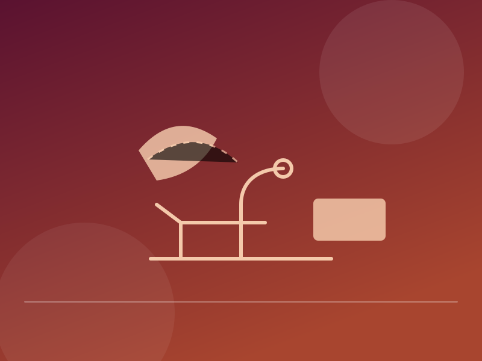
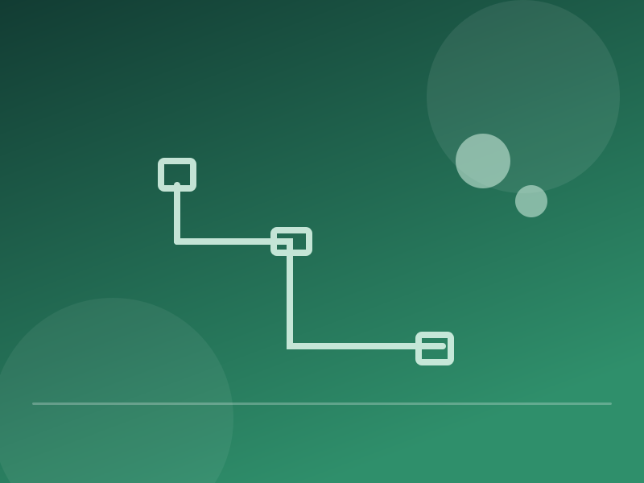
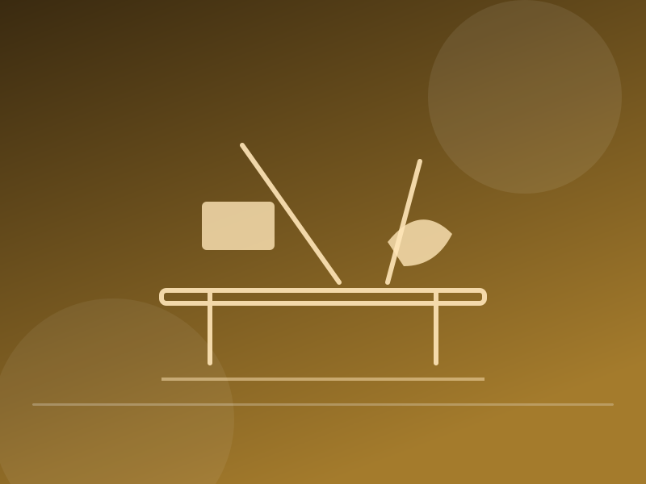
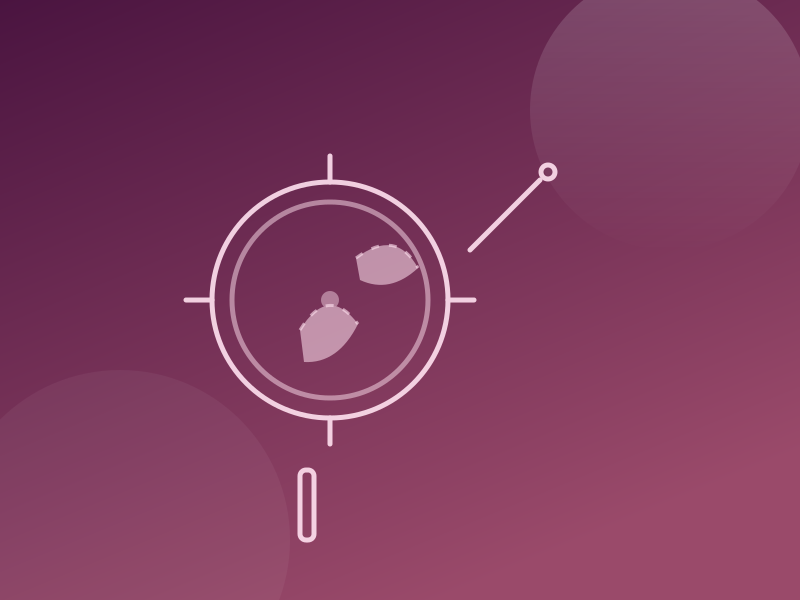
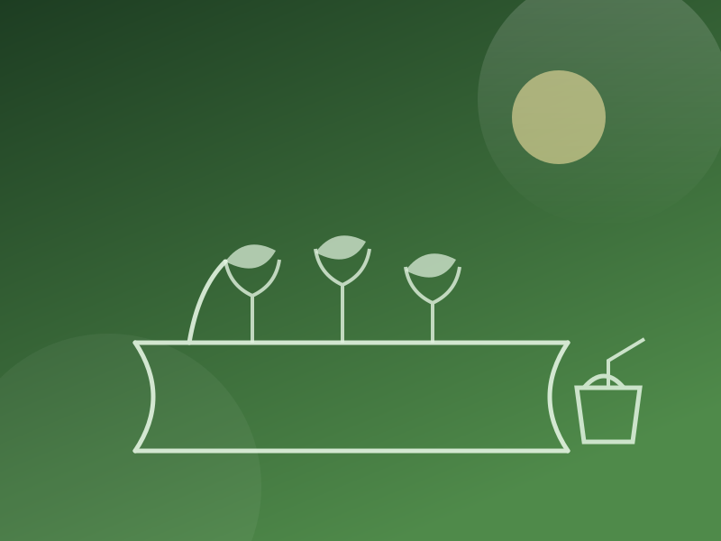
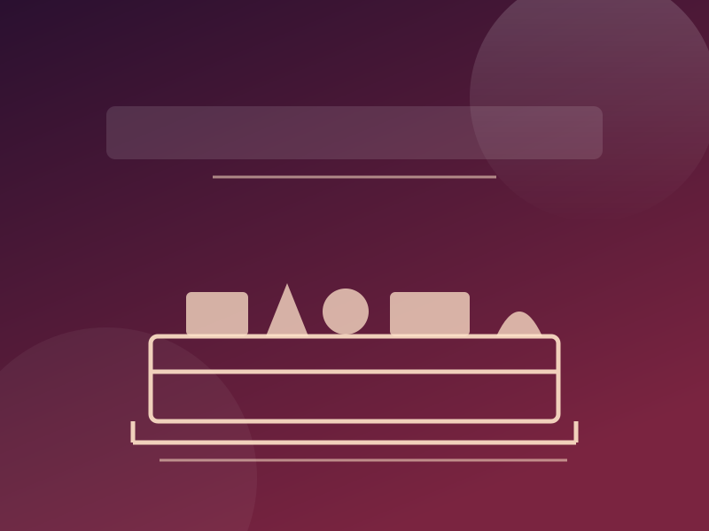
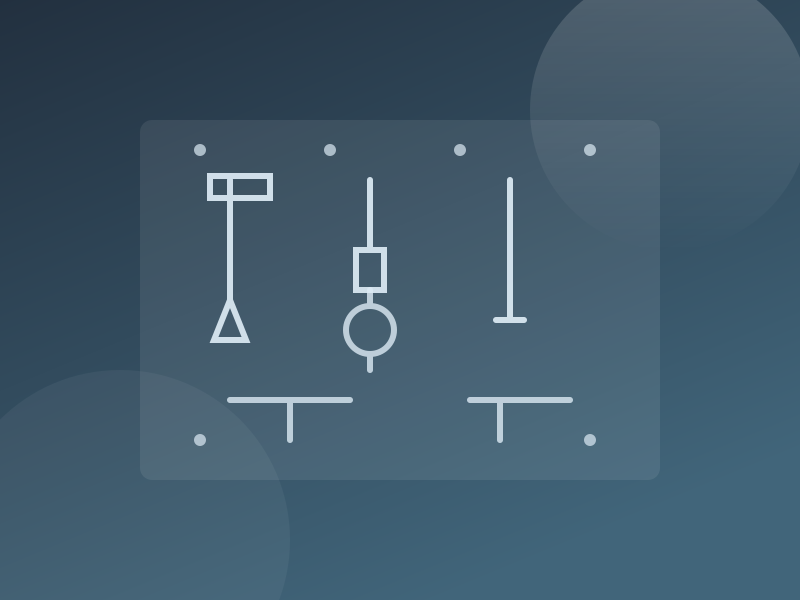

Skills our students build with their hands
Tailoring, electrical work, plumbing, woodwork, gardening and craft, taught in weekly practical sessions.
A room where lessons become things you can use
Students learn a trade each week from a teacher or a visiting instructor, working with real tools.
Every student leaves able to mend a hem, change a plug, stop a leaking tap or build a simple shelf.
How a session runs
- Safety briefing before every session
- Small groups of four to six students
- A finished item or repair by the end of term
- Work shown at the school exhibition
What students learn here
Courses of eight to ten sessions; a second trade can be chosen next term.
Tailoring and embroidery
Hand and machine stitching, measuring, cutting a pattern and finishing a garment.
Electrical work
Circuits, wire jointing, plugs and switches, earthing and fuses.
Plumbing
PVC pipe work, joints, valves and tap or cistern repairs.
Woodwork and carpentry
Sawing and finishing, then making a stool, shelf or book stand.
Agriculture and gardening
Seed beds, composting, vegetable seedlings and the school garden.
Craft and recycling
Paper, cloth and coconut shell turned into lamps, bags and teaching aids.
Work from the corner







Want to see the corner?
Parents and former students are welcome during office hours — call 9446553567.